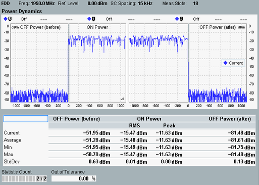

The power dynamics view shows a diagram and a statistical overview of related power results.
The following figure shows measurement results for the general ON/OFF time mask.

There are two diagrams. One shows the start of the first allocated resource unit (RU). The other one shows the end of the last allocated RU.
- The origin 0 µs marks the start of the first allocated RU in the left diagram and the end of the last allocated RU in the right diagram.
- For 3.75 kHz SC spacing, the axis covers -2200 µs to 2200 µs.
- For 15 kHz SC spacing, the axis covers -1100 µs to 1100 µs.
The individual ON and OFF power areas are labeled in the diagrams. Exclusion periods are marked by gray vertical bars.
The table below the diagrams shows a statistical evaluation of the ON power and OFF power values. For a definition of the values, see "Power Dynamics Limits".
For the parameters at the bottom of the view, see "Common View Elements".
For query of the diagram and table contents via remote control, see "Power Dynamics Results".
Measurement configuration To detect the start of the first RU correctly, configure appropriate trigger settings (for example power trigger for the rising edge, no delay). To measure the end of the last allocated RU and the "OFF Power (after)", configure the resource allocation settings according to your signal properties. Configure a sufficient number of measured slots (at least length of allocated resource units, including repetitions). See also "Scope of the Measurement". |